8.136
Current CGPA
Electronics & Frontend Developer
I have a strong foundation in programming and I am continuously enhancing my technical and creative skills. I aim to contribute unique and innovative design solutions through my knowledge and hands-on project experience.
Current CGPA
B.E. ECE
Major Projects
About Me
I am currently pursuing Bachelor of Electronics and Communication Engineering at M.Kumarasamy College of Engineering, Karur. I enjoy combining electronics concepts with software tools to build systems that are practical and useful.
Along with core technical knowledge, I value communication, teamwork, and adaptability. I am looking for opportunities where I can learn quickly, collaborate, and contribute to meaningful projects.
Internship
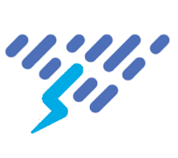
Duration: Dec 2025 – May 2026
Tools: Verilog, SystemVerilog, UVM
Selected for an online VLSI Internship Training Programme focused on digital design and verification. Gaining practical exposure to Verilog, SystemVerilog, and basic UVM methodologies while working on industry-oriented projects. This internship strengthens my understanding of semiconductor design, hardware development, and real-time VLSI workflows.
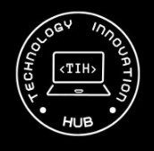
Role: Developer
Tools: PHP, JavaScript, CSS
Developed a Discipline Management System as part of the Technology Innovation Hub initiative. The system was built using PHP, JavaScript, and CSS to manage and monitor discipline-related records efficiently. The project has been successfully deployed and is live on the official KR Connect platform.
Featured Work
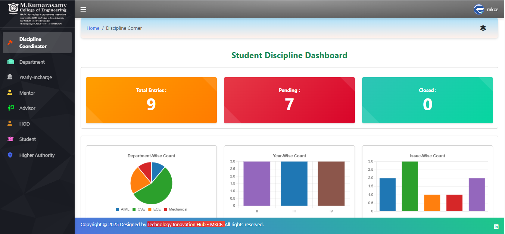
vs code/phpTeam size: 11 | Role: Frontend Developer and Database Schema Designer
Built a system software that college management used to record the disciplinary records of students and to manage the records efficiently. This system helps to record the report in the software without any mannual or hardware interference.
Project Details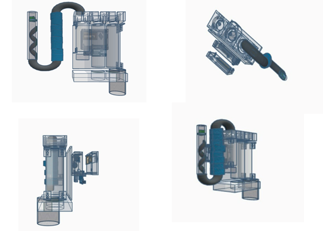
MATLAB / IoTTeam size: 4 | Role: Project Designing
Focused on removing chemical components from industrial wastewater such as dye and chemical industry discharge using integrated IoT concepts.
Project Details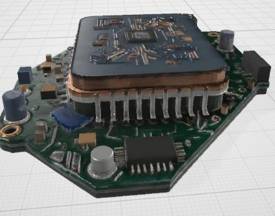
ASIC / Embedded / IoTDesigned a hardware-based smart sensor processing unit using ASIC architecture to analyze and interpret sensor data in real time.
The system integrates a reconfigurable design with an Arithmetic Logic Unit (ALU) to perform logical and arithmetic operations for efficient sensor signal processing. This approach reduces processing delay and improves performance for embedded and IoT sensing applications.
Project Details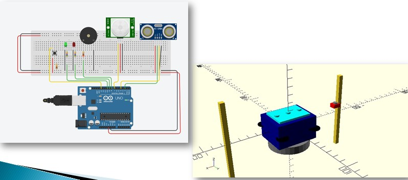
Embedded / Sensors / Farm SecurityDesigned a smart electric fence system to protect agricultural fields from animal intrusion.
The system uses sensors to detect movement near the boundary and activates an electric fence to deter animals safely. It also provides alerts to farmers for quick monitoring and improves farm security with an automated protection mechanism.
Project Details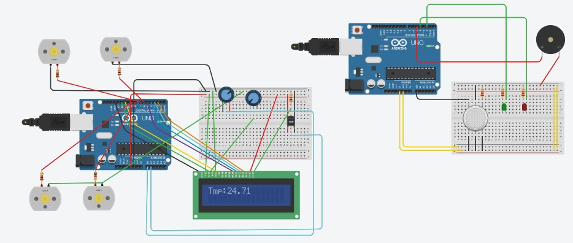
IoT / Sensors / Food SafetyDesigned a smart monitoring system to track temperature and humidity levels inside a refrigerator.
The system uses sensors to continuously measure environmental conditions and display the values in real time. It helps maintain proper food storage conditions and alerts users when the temperature or humidity exceeds safe limits, improving food safety and reducing spoilage.
Project Details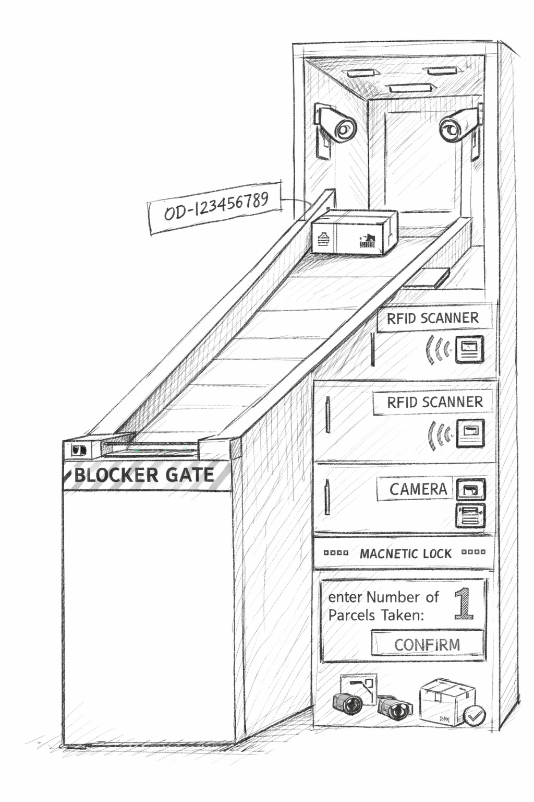
RFID / Vision Tracking / SecurityDeveloped a smart parcel management system for campus environments to ensure secure and efficient package handling.
The system uses RFID authentication to verify authorized users during parcel collection and a vision-based tracking system to monitor parcel movement and order status. This improves delivery accuracy, enhances security, and reduces the risk of parcel loss within the campus.
Project DetailsEducation
M.Kumarasamy College of Engineering, Karur
Duration: 2023-2027
CGPA (up to 5th semester): 8.12
Skills
Area of Interest
Achievements
.png)
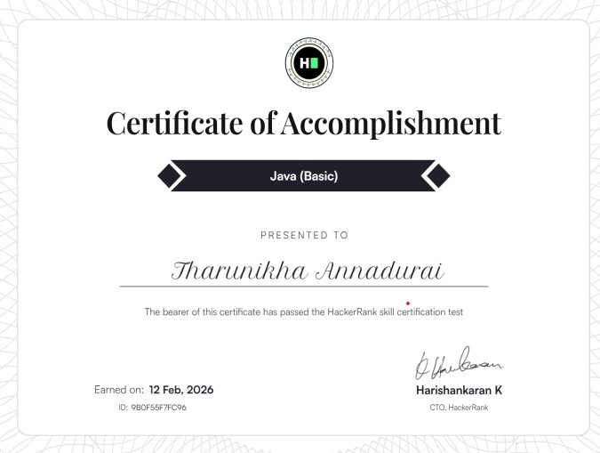
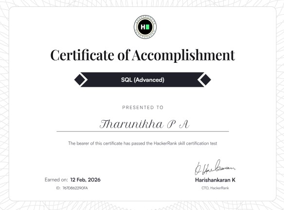
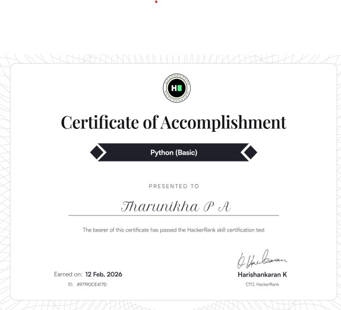
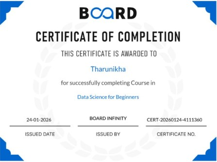
Contact